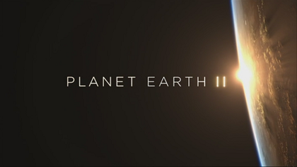

← Back to Home
Planet Earth II
Planet Earth II is a sequel to the acclaimed documentary series Planet Earth. This series takes viewers on a breathtaking journey through the world's most iconic habitats, showcasing the incredible wildlife that inhabits them. With stunning cinematography and groundbreaking technology, Planet Earth II offers a fresh perspective on the natural world.